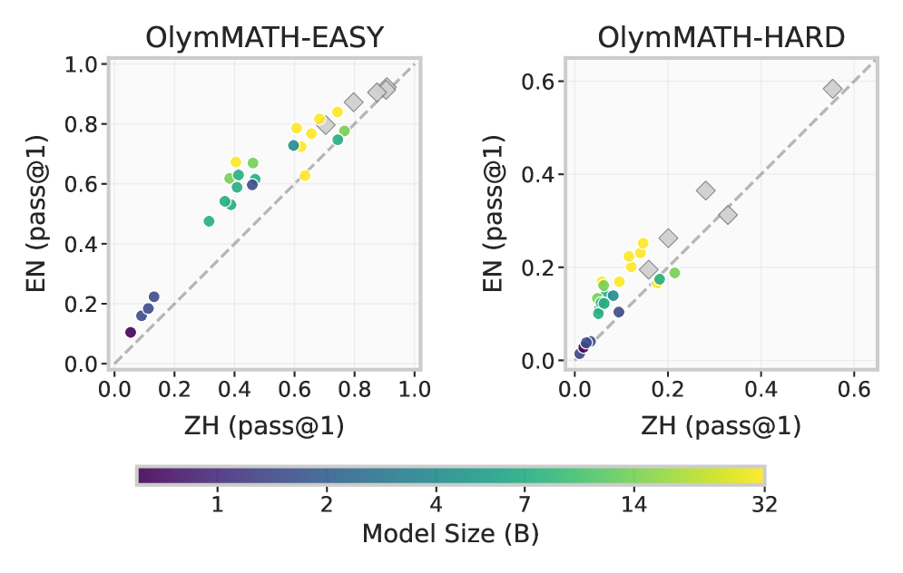

Includes OlymMATH-LEAN, 150 Olympiad problems formalized in Lean 4 for formal-verification process-level evaluation.
Abstract
The rapid advancement of large reasoning models has saturated existing math benchmarks, underscoring the urgent need for more challenging evaluation frameworks. To address this, we introduce OlymMATH, a rigorously curated, Olympiad-level math benchmark comprising 350 problems, each with parallel English and Chinese versions. OlymMATH is the first benchmark to unify dual evaluation paradigms within a single suite: (1) natural language evaluation through OlymMATH-EASY and OlymMATH-HARD, comprising 200 computational problems with numerical answers for objective rule-based assessment, and (2) formal verification through OlymMATH-LEAN, offering 150 problems formalized in Lean 4 for rigorous process-level evaluation. All problems are manually sourced from printed publications to minimize data contamination, verified by experts, and span four core domains. Extensive experiments reveal the benchmark's significant challenge, and our analysis also uncovers consistent performance gaps between languages and identifies cases where models employ heuristic "guessing" rather than rigorous reasoning. To further support community research, we release 582k+ reasoning trajectories, a visualization tool, and expert solutions at https://github.com/RUCAIBox/OlymMATH.
Problem
Rapid advancement in large reasoning models has saturated existing math benchmarks, creating an urgent need for more challenging evaluation frameworks that can discriminate between model capabilities.
Approach
The authors introduce OlymMATH, an Olympiad-level math benchmark with 350 problems in parallel English and Chinese versions. It unifies two evaluation paradigms: natural language evaluation (OlymMATH-EASY and OlymMATH-HARD, 200 computational problems with numerical answers) and formal verification (OlymMATH-LEAN, 150 problems formalized in Lean 4). All problems are manually sourced from printed publications to minimize data contamination and span four core domains.
Results
Experiments reveal significant challenge for current models. The analysis uncovers consistent performance gaps between English and Chinese and identifies cases where models use heuristic guessing rather than rigorous reasoning. The authors release 582k+ reasoning trajectories alongside the benchmark.

Figure 2: Pass@1 on OlymMATH EN (y) vs. ZH (x), the dashed line shows parity. Points above favor EN, below favor ZH. Solid circles (local dense models, colored by size) indicate larger models trend towards higher accuracy. Diamonds are MoE or closed-source models.